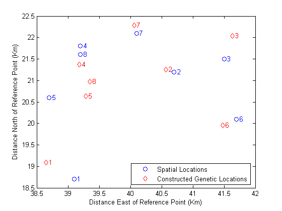
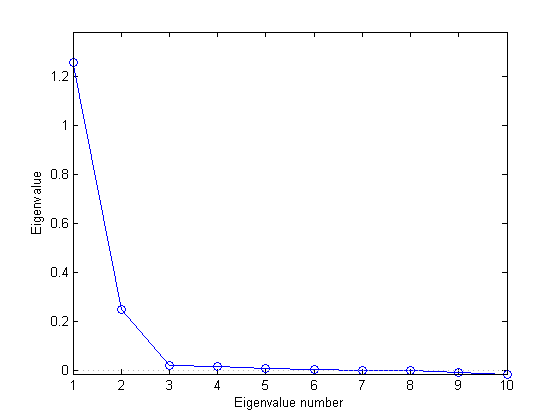
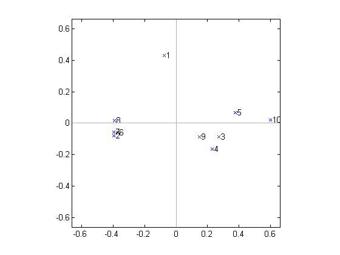
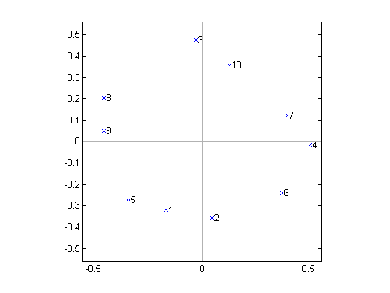

Classical multidimensional scaling, also known as Principal Coordinates Analysis, takes a matrix of interpoint distances, and creates a configuration of points. Ideally, those points can be constructed in two or three dimensions, and the Euclidean distances between them approximately reproduce the original distance matrix. Thus, a scatter plot of the those points provides a visual representation of the original distances.
The two examples in this demo illustrate applications of multidimensional scaling to dissimilarity measures other than spatial distance, and show how to construct a configuration of points to visualize those dissimilarities.
This demo describes "classical" multidimensional scaling, using the CMDSCALE function in the Statistics Toolbox. The MDSCALE function performs "non-classical" MDS, which is sometimes more flexible than the classical method. Non-classical MDS is described in the Non-Classical Multidimensional Scaling demo.
Suppose you have measured the genetic "distance", or dissimilarity, between a number of local subpopulations of a single species of animal. You also know their geographic locations, and would like to know how closely their genetic and spatial distances correspond. If they do, that is evidence that interbreeding between the subpopulations is affected by their geographic locations.
Below are the spatial locations of the subpopulations, and the upper-triangle of the matrix of genetic distances, in the same vector format produced by PDIST.
X = [39.1 18.7;
40.7 21.2;
41.5 21.5;
39.2 21.8;
38.7 20.6;
41.7 20.1;
40.1 22.1;
39.2 21.6];
D = [4.69 6.79 3.50 3.11 4.46 5.57 3.00 ...
2.10 2.27 2.65 2.36 1.99 1.74 ...
3.78 4.53 2.83 2.44 3.79 ...
1.98 4.35 2.07 0.53 ...
3.80 3.31 1.47 ...
4.35 3.82 ...
2.57];
Although this vector format for D is space-efficient, it's often easier to see the distance relationships if you reformat the distances to a square matrix.
squareform(D)
ans =
0 4.6900 6.7900 3.5000 3.1100 4.4600 5.5700 3.0000
4.6900 0 2.1000 2.2700 2.6500 2.3600 1.9900 1.7400
6.7900 2.1000 0 3.7800 4.5300 2.8300 2.4400 3.7900
3.5000 2.2700 3.7800 0 1.9800 4.3500 2.0700 0.5300
3.1100 2.6500 4.5300 1.9800 0 3.8000 3.3100 1.4700
4.4600 2.3600 2.8300 4.3500 3.8000 0 4.3500 3.8200
5.5700 1.9900 2.4400 2.0700 3.3100 4.3500 0 2.5700
3.0000 1.7400 3.7900 0.5300 1.4700 3.8200 2.5700 0
CMDSCALE recognizes either of the two formats.
[Y,eigvals] = cmdscale(D);
CMDSCALE's first output, Y, is a matrix of points created to have interpoint distances that reproduce the distances in D. With eight species, the points (rows of Y) could have as many as eight dimensions (columns of Y). Visualization of the genetic distances depends on using points in only two or three dimensions. Fortunately, CMDSCALE's second output, EIGVALS, is a set of sorted eigenvalues whose relative magnitudes indicate how many dimensions you can safely use. If only the first two or three eigenvalues are large, then only those coordinates of the points in Y are needed to accurately reproduce D. If more than three eigenvalues are large, then it is not possible to find a good low-dimensional configuration of points, and it will not be easy to visualize the distances.
[eigvals eigvals/max(abs(eigvals))]
ans =
29.0371 1.0000
13.5746 0.4675
2.0987 0.0723
0.7418 0.0255
0.3403 0.0117
0.0000 0.0000
-0.4542 -0.0156
-3.1755 -0.1094
Notice that there are only two large positive eigenvalues, so the configuration of points created by CMDSCALE can be plotted in two dimensions. The two negative eigenvalues indicate that the genetic distances are not Euclidean, that is, no configuration of points can reproduce D exactly. Fortunately, the negative eigenvalues are small relative to the largest positive ones, and the reduction to the first two columns of Y should be fairly accurate. You can check this by looking at the error in the distances between the two-dimensional configuration and the original distances.
maxrelerr = max(abs(D - pdist(Y(:,1:2)))) / max(D)
maxrelerr =
0.1335
Now you can compare the "genetic locations" created by CMDSCALE to the actual geographic locations. Because the configuration returned by CMDSCALE is unique only up to translation, rotation, and reflection, the genetic locations probably won't match the geographic locations. They will also have the wrong scale. But you can use the PROCRUSTES command to match up the two sets of points best in the least squares sense.
[D,Z] = procrustes(X,Y(:,1:2)); plot(X(:,1),X(:,2),'bo',Z(:,1),Z(:,2),'rd'); labels = num2str((1:8)'); text(X(:,1)+.05,X(:,2),labels,'Color','b'); text(Z(:,1)+.05,Z(:,2),labels,'Color','r'); xlabel('Distance East of Reference Point (Km)'); ylabel('Distance North of Reference Point (Km)'); legend({'Spatial Locations','Constructed Genetic Locations'},4);
This plot shows the best match of the reconstructed points in the same coordinates as the actual spatial locations. Apparently, the genetic distances do have a close link to the spatial distances between the subpopulations.
Suppose you have computed the following correlation matrix for a set of 10 variables. It's obvious that these variables are all positively correlated, and that there are some very strong pairwise correlations. But with this many variables, it's not easy to get a good feel for the relationships among all 10.
Rho = ...
[1 0.3906 0.3746 0.3318 0.4141 0.4279 0.4216 0.4703 0.4362 0.2066;
0.3906 1 0.3200 0.3629 0.2211 0.9520 0.9811 0.9052 0.4567 0 ;
0.3746 0.3200 1 0.8993 0.7999 0.3589 0.3460 0.3333 0.8639 0.6527;
0.3318 0.3629 0.8993 1 0.7125 0.3959 0.3663 0.3394 0.8719 0.5726;
0.4141 0.2211 0.7999 0.7125 1 0.2374 0.2079 0.2335 0.7050 0.7469;
0.4279 0.9520 0.3589 0.3959 0.2374 1 0.9657 0.9363 0.4791 0.0254;
0.4216 0.9811 0.3460 0.3663 0.2079 0.9657 1 0.9123 0.4554 0.0011;
0.4703 0.9052 0.3333 0.3394 0.2335 0.9363 0.9123 1 0.4418 0.0099;
0.4362 0.4567 0.8639 0.8719 0.7050 0.4791 0.4554 0.4418 1 0.5272;
0.2066 0 0.6527 0.5726 0.7469 0.0254 0.0011 0.0099 0.5272 1 ];
Multidimensional scaling is often thought of as a way to (re)construct points using only pairwise distances. But it can also be used with dissimilarity measures that are more general than distance, to spatially visualize things that are not "points in space" in the usual sense. The variables described by Rho are an example, and you can use CMDSCALE to plot a visual representation of their interdependencies.
Correlation actually measures similarity, but it is easy to transform it to a measure of dissimilarity. Because all the correlations here are positive, you can simply use
D = 1 - Rho;
although other choices might also make sense. If Rho contained negative correlations, you would have to decide whether, for example, a correlation of -1 indicated more or less of a dissimilarity than a correlation of 0, and choose a transformation accordingly.
It's important to decide whether visualization of the information in the correlation matrix is even possible, that is, whether the number of dimensions can be reduced from ten down to two or three. The eigenvalues returned by CMDSCALE give you a way to decide. In this case, a scree plot of those eigenvalues indicates that two dimensions are enough to represent the variables. (Notice that some of the eigenvalues in the plot below are negative, but small relative to the first two.)
[Y,eigvals] = cmdscale(D); plot(1:length(eigvals),eigvals,'bo-'); graph2d.constantline(0,'LineStyle',':','Color',[.7 .7 .7]); axis([1,length(eigvals),min(eigvals),max(eigvals)*1.1]); xlabel('Eigenvalue number'); ylabel('Eigenvalue');
In a more independent set of variables, more dimensions might be needed. If more than three variables are needed, the visualization isn't all that useful.
A 2-D plot of the configuration returned by CMDSCALE indicates that there are two subsets of variables that are most closely correlated among themselves, plus a single variable that is more or less on its own. One of the clusters is tight, while the other is relatively loose.
labels = {' 1',' 2',' 3',' 4',' 5',' 6',' 7',' 8',' 9',' 10'};
plot(Y(:,1),Y(:,2),'bx');
axis(max(max(abs(Y))) * [-1.1,1.1,-1.1,1.1]); axis('square');
text(Y(:,1),Y(:,2),labels,'HorizontalAlignment','left');
hx = graph2d.constantline(0,'LineStyle','-','Color',[.7 .7 .7]);
hx = changedependvar(hx,'x');
hy = graph2d.constantline(0,'LineStyle','-','Color',[.7 .7 .7]);
hy = changedependvar(hy,'y');
 On the other hand, the results from CMDSCALE for the following correlation matrix indicates a much different structure: there are no real groups among the variables. Rather, there is a kind of "circular" dependency, where each variable has a pair of "closest neighbors" but is less well correlated with the remaining variables.
Rho = ...
[1 0.7946 0.1760 0.2560 0.7818 0.4496 0.2732 0.3995 0.5305 0.2827;
0.7946 1 0.1626 0.4227 0.5674 0.6183 0.4004 0.2283 0.3495 0.2777;
0.1760 0.1626 1 0.2644 0.1864 0.1859 0.4330 0.4656 0.3947 0.8057;
0.2560 0.4227 0.2644 1 0.1017 0.7426 0.8340 0 0.0499 0.4853;
0.7818 0.5674 0.1864 0.1017 1 0.2733 0.1484 0.4890 0.6138 0.2025;
0.4496 0.6183 0.1859 0.7426 0.2733 1 0.6303 0.0648 0.1035 0.3242;
0.2732 0.4004 0.4330 0.8340 0.1484 0.6303 1 0.1444 0.1357 0.6291;
0.3995 0.2283 0.4656 0 0.4890 0.0648 0.1444 1 0.8599 0.3948;
0.5305 0.3495 0.3947 0.0499 0.6138 0.1035 0.1357 0.8599 1 0.3100;
0.2827 0.2777 0.8057 0.4853 0.2025 0.3242 0.6291 0.3948 0.3100 1 ];
[Y,eigvals] = cmdscale(1-Rho);
[eigvals eigvals./max(abs(eigvals))]
ans =
1.1416 1.0000
0.7742 0.6782
0.0335 0.0294
0.0280 0.0245
0.0239 0.0210
0.0075 0.0066
0.0046 0.0040
0.0000 0.0000
-0.0151 -0.0132
-0.0472 -0.0413
plot(Y(:,1),Y(:,2),'bx'); axis(max(max(abs(Y))) * [-1.1,1.1,-1.1,1.1]); axis('square'); text(Y(:,1),Y(:,2),labels,'HorizontalAlignment','left'); hx = graph2d.constantline(0, 'LineStyle','-','Color',[.7 .7 .7]); hx = changedependvar(hx,'x'); hy = graph2d.constantline(0,'LineStyle','-','Color',[.7 .7 .7]); hy = changedependvar(hy,'y');
Multidimensional scaling is most often used to visualize data when only their distances or dissimilarities are available. However, when the original data are available, multidimensional scaling can also be used as a dimension reduction method, by reducing the data to a distance matrix, creating a new configuration of points using CMDSCALE, and retaining only the first few dimensions of those points. This application of multidimensional scaling is much like Principal Components Analysis, and in fact, when you call CMDSCALE using the Euclidean distances between the points, the results are identical to PCA, up to a change in sign.
n = 10; m = 5;
X = randn(n,m);
D = pdist(X,'Euclidean');
[Y,eigvals] = cmdscale(D);
[PC,Score,latent] = princomp(X);
Y
Y =
-1.0158 1.2386 0.0060 -0.1862 -0.0139
0.4233 1.2419 -0.4636 -0.3256 0.0130
1.9488 -0.4976 -0.4526 0.0984 -0.3629
-1.7196 -1.8955 0.4119 -0.4262 0.1036
0.2982 -1.0178 -1.2512 0.0637 -0.1102
-0.2840 -0.1362 1.2490 0.2974 -0.1863
0.2371 -0.2654 -0.3294 0.4313 0.4508
-1.5444 0.4608 1.0132 0.1571 -0.0944
-1.5988 0.6909 -0.9806 0.0849 0.0122
3.2552 0.1803 0.7974 -0.1949 0.1882
Score
Score =
-1.0158 -1.2386 0.0060 0.1862 0.0139
0.4233 -1.2419 -0.4636 0.3256 -0.0130
1.9488 0.4976 -0.4526 -0.0984 0.3629
-1.7196 1.8955 0.4119 0.4262 -0.1036
0.2982 1.0178 -1.2512 -0.0637 0.1102
-0.2840 0.1362 1.2490 -0.2974 0.1863
0.2371 0.2654 -0.3294 -0.4313 -0.4508
-1.5444 -0.4608 1.0132 -0.1571 0.0944
-1.5988 -0.6909 -0.9806 -0.0849 -0.0122
3.2552 -0.1803 0.7974 0.1949 -0.1882
Even the nonzero eigenvalues are identical up to a scale factor.
[eigvals(1:m) (n-1)*latent]
ans =
23.7294 23.7294
8.7643 8.7643
6.4474 6.4474
0.6804 0.6804
0.4373 0.4373